Senior backend engineer
Scalable, resilient backends in Rust, Node.js and distributed systems.
[engineer] name = "Monzer Omer" role = "Engineering lead" since = 2020 ai_share = 0.95 [engineer.focus] langs = ["Rust", "TypeScript"] systems = ["Kafka", "RabbitMQ"] # Builds a language on the side.